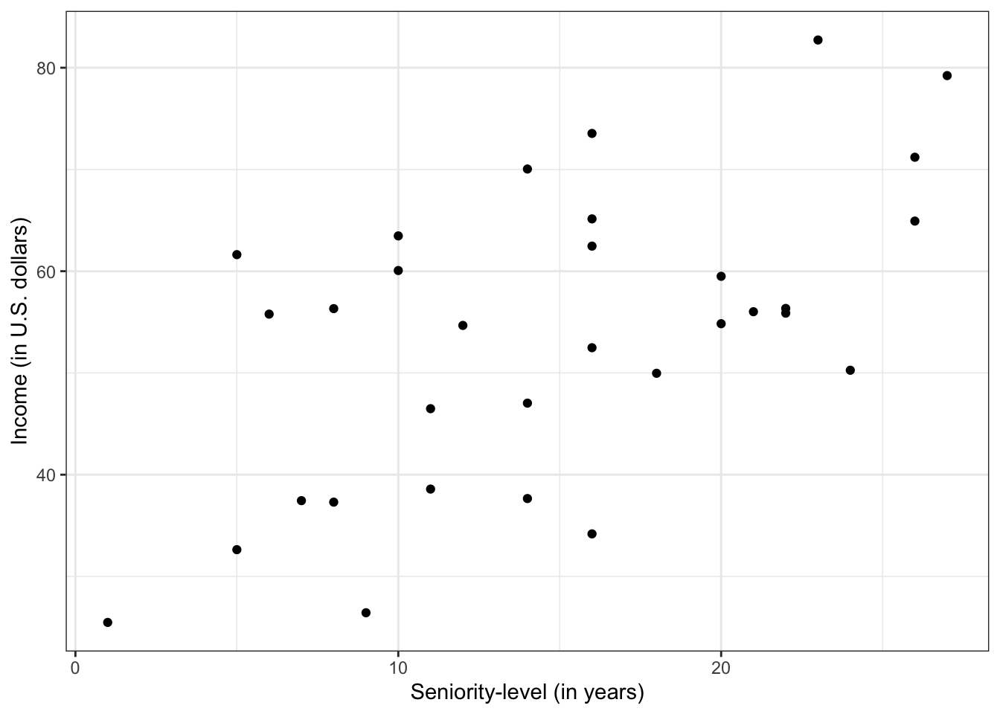

Work with one or more other students to complete each of the tasks in this document. As part of this, include the syntax you use to complete each tasks in a script file. As you write your script file, adhere to good coding practices:
Include comments
Include spaces
Include a line break after every pipe operator you use.
You will also need to answer some questions in a Word or Google document.
Task 1: Import Data
Import the riverview.csv data into an object named city. Also, examine the data codebook so you are familiar with the different attributes.
Create a density plot of the years of seniority attribute (seniority). You may also want to produce summary statistics for this attribute. Describe the shape, center (i.e., typical value), and variability. Be sure to use the data context in this description.
# Density plotggplot(data = city, aes(x = seniority)) +stat_density(geom ="line") +theme_bw() +xlab("Seniority-level (in years)") +ylab("Probability density")
The marginal distribution of seniority-level is unimodal, and roughly symmetric with a mean of close to 15 years (\(M=14.81\)). There is variation in employees’ seniority-level of education, with most having between 8 and 22 years of seniority (\(SD=6.95\)).
Task 3: Relationship between Seniority-level and Income
Create a scatterplot of the relationship between seniority-level and income. In this plot assume income is the outcome and seniority-level is the predictor. Describe this relationship by indicating the functional form, direction, magnitude, strength, and any potential outliers. Be sure to use the data context in this description.
ggplot(data = city, aes(x = seniority, y = income)) +geom_point() +theme_bw() +xlab("Seniority-level (in years)") +ylab("Income (in U.S. dollars)")

The relationship between seniority-level and income seems linear and positive, suggesting that employees with higher levels of seniority tend to also have higher incomes. The magnitude of this relationship seems somewhat large (steep). The strength of the relationship is weak-to-moderate. There do not appear to be potential outliers in the plot.
Task 4: Compute the Correlation Coefficient
Compute and report the correlation coefficient between seniority-level and income.
# A tibble: 2 × 3
term income seniority
<chr> <dbl> <dbl>
1 income NA 0.582
2 seniority 0.582 NA
\[
r_{\text{Income, Seniority}} = 0.582
\]
Task 5: Fit the Regression Model
Fit the regression model that uses seniority-level to predict variation in income. Write the fitted equation. Be sure you can write the fitted equation using Equation Editor in Microsoft Word/Google Docs. (This includes adding any hats, or subscripts!)
# Fit regressionlm.1=lm(income ~1+ seniority, data = city)# View coefficientslm.1
Call:
lm(formula = income ~ 1 + seniority, data = city)
Coefficients:
(Intercept) seniority
35.690 1.219